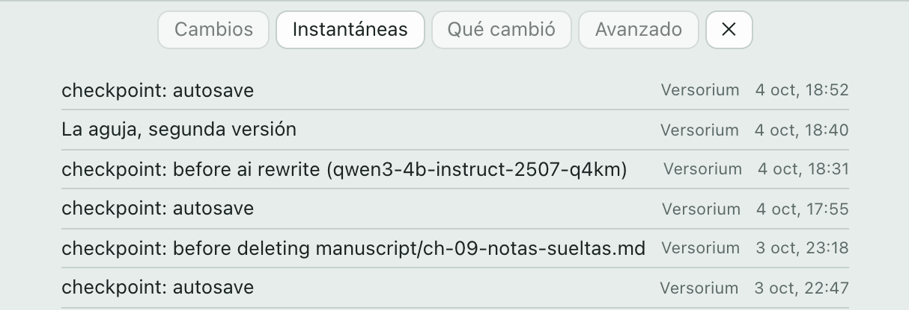
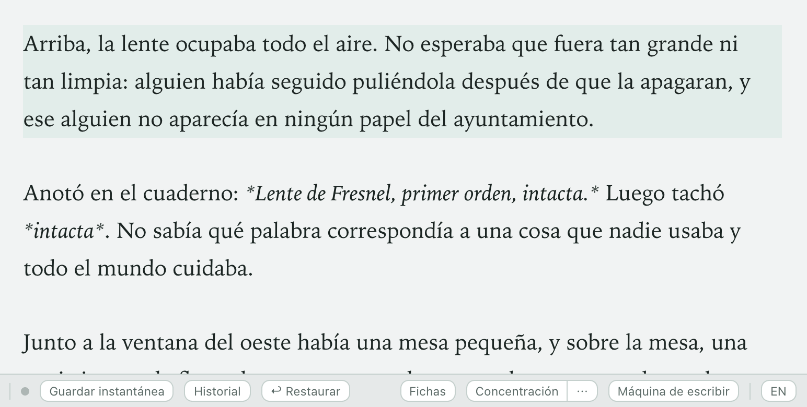
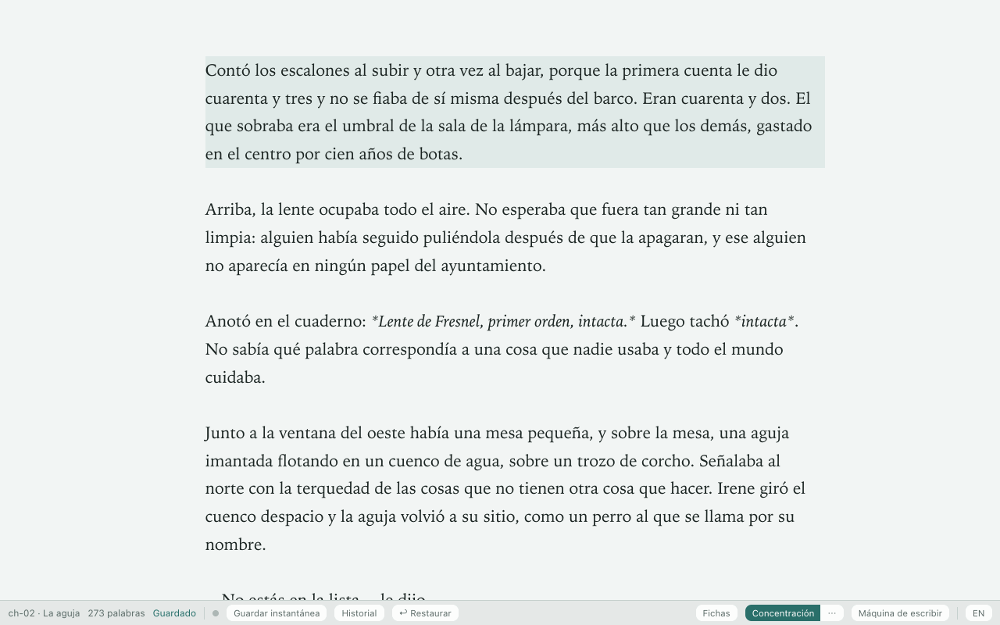
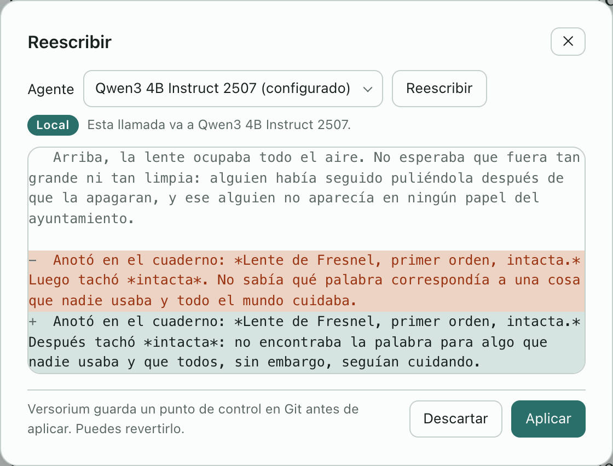

Escribe tu novela.
Cada borrador queda guardado.
Una app para tu ordenador que funciona sin conexión. La IA está apagada hasta que la llames.
Probada en Apple siliconSin probar en WindowsSin probar en LinuxGratis · Sin cuenta · Código abierto
Sin JavaScript, la página sigue el modo de tu sistema.
Versorium con el capítulo «La aguja» abierto. Se escribe una frase, la barra de estado pasa a «Guardado» y el punto del historial se apaga cuando se guarda una instantánea.
Nada se pierde.
Versorium guarda mientras escribes. Cada minuto, y antes de que la IA toque nada, hace una instantánea.


Tuya, de principio a fin.
Una carpeta en tu disco
Cada capítulo es un archivo de texto que se abre sin Versorium.
La IA, solo si la llamas
Tú eliges cuál, y no escribe nada sin tu permiso.
- Apagada
- En tu ordenador
- Tu herramienta
Llévatela a donde quieras
Exporta a DOCX con formato de manuscrito, EPUB, PDF y Scrivener.
Una mesa para escribir.
Fichas.
Toda la novela, de un vistazo.

Concentración.
Solo tú y la página.

Reescribir.
Ves cada cambio antes de aplicarlo.
Grabación real; el texto propuesto es un ejemplo.

Máquina de escribir · Corrector ortográfico · Tamaño y ancho del texto · Plantillas · Respaldo en un clic · En español e inglés
Las cartas sobre la mesa.
Precios de lista en USD y funciones según la web de cada una en octubre de 2026. Un guion: su web no lo dice.
Desliza la tabla para ver las cinco alternativas
| Qué se compara | Versoriumv0.1 · probada solo en macOS | Dabble | Notion | Novelcrafter | Scrivener | Sudowrite |
|---|---|---|---|---|---|---|
| Tres añoslo más barato | 0 $código abierto | 547,20 $ | 0 $plan Free | 120 $con IA, 240 $ | 59,99 $pago único | 360 $ |
| Dónde vive tu novela | Tus archivos, en Markdown | Tu ordenador y su nube | Su nube | Su app web | Un proyecto en tu disco | Su app web |
| Historial | Cada minuto, sin caducar; volver aún requiere git | Versiones restaurables; copia en la nube | 7 a 90 días; Enterprise, sin límite | Revisiones restaurables | Instantáneas y copias automáticas | Historial de documentos |
| IA | Apagada, local, o Claude Code, Codex u OpenCodecon tu suscripción | Ninguna, a propósito | Notion AI, plan Business | Tu clave de API o modelos locales | Su web no lo dice | La suya, con créditos |
| Cuenta y conexión | Sin cuenta; funciona sin conexión | Cuenta; también sin conexión | Cuenta; páginas descargadas | Cuenta; solo con conexión | Licencia; app de escritorio | Cuenta; Su web no lo dice |
| En el móvil | No | iOS y Android | iOS y Android | Su web no lo dice | iOS, 23,99 $ aparte | iOS y Android |
Donde otras van por delante: sincronizar equipos, escribir a varias manos y volver a una versión desde la app.
Sigue mejorando: 229 cambios en tres semanas, y su lista pública incluye restaurar versiones desde la app y respaldos programados.
Ya puedes descargarla.
Versorium 0.1.0, la primera versión.
- macOS 10.15+ · tu sistemaApple silicon Intel
- Windows · sin probar · tu sistema.exe .msi
- Linux · sin probar · tu sistema.deb .rpm .AppImage
SHA256SUMS · Novedades · Próximas versiones: Watch → Custom → Releases en GitHub, o RSS
Antes de que preguntes.
¿Mi novela sale de mi ordenador?
Solo si tú lo pides: al enviarla a GitHub, al reescribir con una herramienta externa o al respaldarla en una carpeta que se sincroniza. Por su cuenta, la app solo busca actualizaciones, sin nada de tu novela, y puedes desactivarlo. Sin telemetría.
¿Necesito una cuenta o saber git?
Cuenta, no: no hay registro. Git, tampoco para escribir: Versorium hace las instantáneas por ti con el git que lleva dentro. Por ahora solo hace falta para volver a una antigua.
¿Qué IA usa?
Ninguna hasta que elijas una: un modelo dentro de la propia app, Ollama, o Claude Code, Codex u OpenCode, que envían el pasaje a su propio servicio. Hoy la IA reescribe pasajes y revisa la continuidad.
¿Puedo traer mi novela de Scrivener o Word?
Sí: importa Scrivener, DOCX, EPUB y Markdown, y te enseña una vista previa antes de crear nada. Desde DOCX, EPUB o Scrivener se pierden negritas, cursivas y escenas.
¿Por qué es gratis?
La hizo una persona, Miguel Esparza, para escribir con calma y no perder nunca un borrador, sin pagar una cuota cada mes. Es código abierto (AGPL-3.0): no hay versión de pago ni anuncios, y la app no recoge datos.
Si Versorium desaparece mañana, tu novela no.
Probada en Apple siliconSin probar en WindowsSin probar en LinuxGratis · Sin cuenta · Código abierto